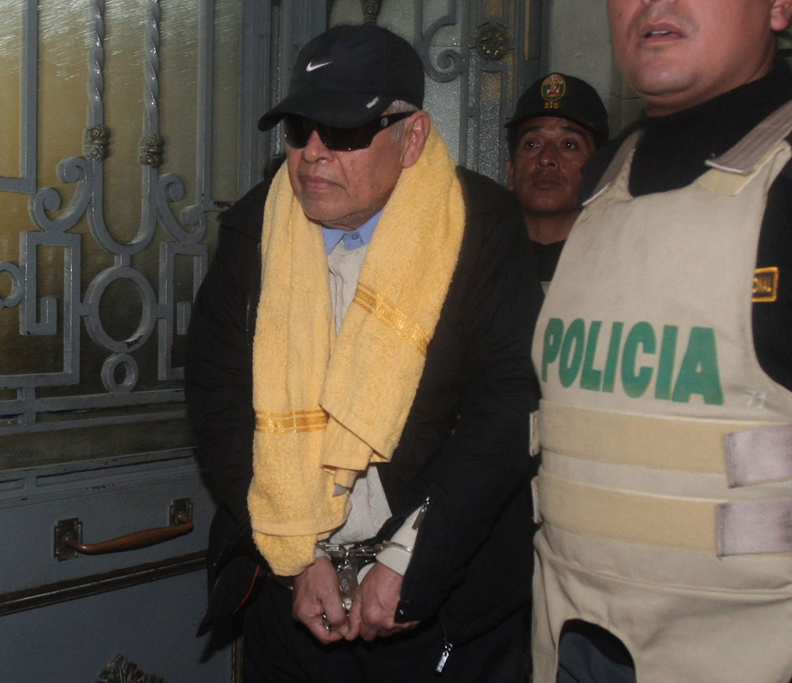
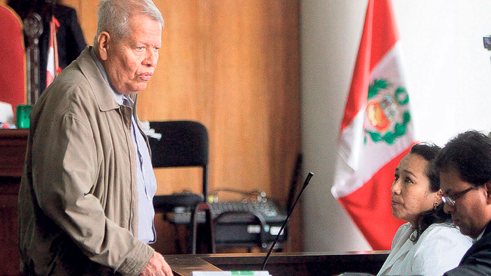
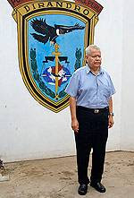
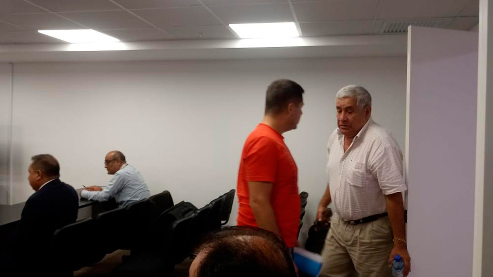
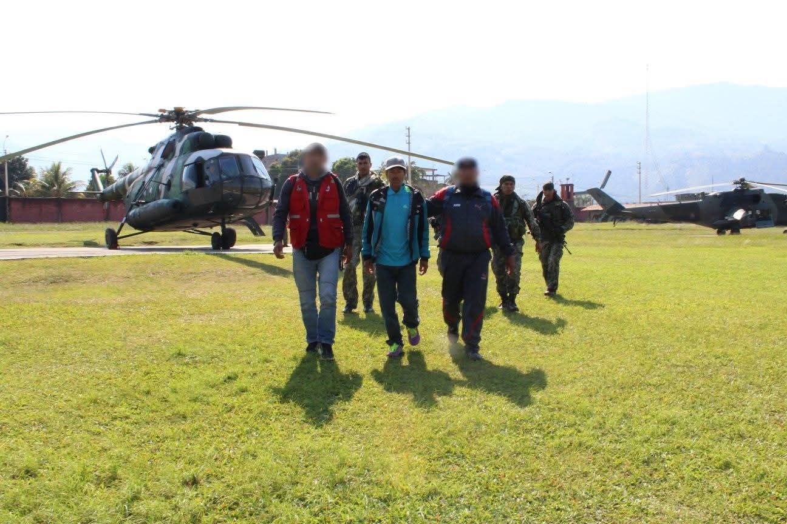

La reincorporada jueza Enma Benavides Vargas, hermana de la exfiscal de la Nación, no sólo absolvió a rankeados narcotraficantes, sino también a numerosos terroristas y otros tantos procesados por lavado de activos, entre estos últimos se cuenta al ex alcalde de Pucallpa, Luis Valdez Villacorta
Por Sonia Suyón
Después de 14 meses de destitución, Enma Benavides Vargas, la hermana de la exfiscal de la Nación, ya se encuentra despachando desde hace más de 30 días en la Corte Superior de Justicia de Lima, como presidenta de la Décima Sala Liquidadora, instancia que ve casos emblemáticos de narcotráfico, lavado de activos, corrupción y crimen organizado. Otra vez sopa. Como se sabe, su retorno se cristalizó gracias a las diligentes gestiones de la Junta Nacional de Justicia (JNJ) presidida por un maltratador de mujeres, con sentencia firme, y a la presta actuación de la presidenta de la Corte Superior de Lima, Miluska Cano, que acató la orden de reponerla.
Enma Benavides es investigada actualmente por el fiscal supremo Alcides Chinchay por presuntamente haber absuelto a narcotraficantes de alto vuelo a cambio de jugosas coimas. Pero eso no es todo, hay más sombras sobre las decisiones judiciales de la hermana de la exfiscal de la Nación, cuando era parte del Colegiado “E” de la Sala Penal Nacional, junto a los jueces superiores Pablo Ilave y María Apaza.
Hasta ahora no se sabía el papel que cumplió la mayor del clan Benavides Vargas en la absolución de confesos terroristas y procesados por lavado de activos. En Pista Clave se lo contamos con detalles.
 Luis Valdez VillacortaEntre los casos de procesados por lavado de activos que la jueza Enma absolvió, hay algunos que resultan realmente escandalosos como el del ex alcalde de Pucallpa Luis Valdez Villacorta, a quien la policía le había probado un desbalance patrimonial de más de 30 millones de soles. En agosto de 2019 la Sala que integraba Enma Benavides absolvió a Valdez Villacorta del delito de lavado de activos del narcotráfico. La hermana de la ex fiscal de la Nación fue la directora de debate del caso, es decir la ponente y autora del sentido del fallo. “En el Caso de Valdez hubo bastante evidencia, pero al final terminaron absolviéndolo”, afirma Sonia Medina, la respetada Procuradora pública en casos de narcotráfico y lavado de activos. Recuerda así esos años de absoluciones a granel por parte de la jueza Enma Benavides. “Le voy a decir que la mayoría de casos en los que participó Benavides absolviendo ya sea por tráfico o por lavado de activos, sintomáticamente ella siempre estaba en la Sala de todos los casos de lavados de activos. Si no era ponente presidía y si no presidía, era ponente”.
Dos años después de que Enma Benavides absolviera a Valdez Villacorta, la Sala Penal Transitoria de la Corte Suprema de Justicia anuló esta sentencia que favorecía al exalcalde de Pucallpa y ordenó que se realizara un nuevo juicio en su contra. En su resolución de nulidad, el Tribunal Supremo determinó que los jueces que absolvieron a Valdez se apartaron sin la debida motivación de los precedentes vinculantes que establecen la independencia del delito de lavado de activos respecto al ilícito que generó los supuestos recursos económicos que fueron blanqueados.
 Corte Suprema anula absolución de Luis Valdez y ordena nuevo juicio.Para refrescar la memoria, Valdez Villacorta estuvo vinculado a la incautación de media tonelada de cocaína con destino a Guatemala, en el 2003 y a la confiscación de 176 kilos de droga en Holanda en el 2008. Lo impresionante es que manejó millonarias sumas de dinero en cuentas blanqueadas en el BCP, a través de sus empresas de fachada, Industrial Ucayali, Triplay Enchapes, Cervecería Amazónica, Técnica de Ensamblaje y Universal Import. Valdez fue detenido por primera vez por el delito de Lavado de Activos en el 2008.
La Corte Suprema también llamó la atención de Enma y de los otros dos jueces por no valorar la prueba indiciaria existente. Es decir, no valoraron que Valdez Villacorta había sido investigado por el delito de tráfico ilícito de drogas. Los vocales supremos cuestionaron además que los jueces superiores no realizaron un debate pericial sobre el desbalance patrimonial del procesado. Es decir, no hicieron su trabajo.
Otro caso emblemático de absolución por parte de Enma Benavides es el del exgeneral Rafael Hoyos de Vinatea, procesado por el delito de lavado de activos y corrupción de funcionarios. El 7 de agosto de 2017 la Sala que integraba Benavides Vargas emitió la sentencia absolutoria, declarando de oficio “fundada” la excepción de naturaleza de acción a favor de Rafael Hoyos de Vinatea y, en consecuencia, declararon extinguida la acción penal en su contra y lo absolvieron. Igualmente absolvieron a Rosario Bimbi Tudela y Rafael Vega Bimbi de los cargos como cómplices del delito de lavado de activos en agravio del Estado. Los hechos imputados se referían a actos de conversión y transferencia como adquisición de activos, apertura de cuentas bancarias y fondos mutuos. Actos ilícitos efectuados con dinero proveniente de la corrupción perpetrada por el mismo Hoyos de Vinatea en tiempos en que era general de división del Ejército Peruano y como tal responsable de la obra “Mejoramiento y rehabilitación de la carretera Cabana”.
Tras el benevolente fallo de Enma Benavides y de los otros dos magistrados, la Sala Penal Permanente de la Corte Suprema de Justicia, el 17 de octubre de 2018, declaró nula esa sentencia absolutoria y ordenó que otro colegiado de jueces realice un nuevo juicio. En efecto, una vez que el caso estuvo en manos de distintos magistrados, el sentido de la sentencia cambió por completo. Así, el 15 de junio de 2021 los jueces superiores Martínez Castro, Contreras Cuzcano y Angulo Morales de la Primera Sala Penal Superior Nacional Transitoria Especializada en Crimen organizado condenaron a Hoyos de Vinatea a 6 años de pena privativa de la libertad, inhabilitación para el ejercicio de cargo público y al pago de 500 mil soles por concepto de reparación civil.
 El exgeneral Rafael Hoyos de Vinatea el día en que fue sentenciado por la Sala Nacional Especial en Crimen Organizado, luego de que la Corte Suprema anula la sentencia absolutoria de Enma Benavides y compañíaY así como estos casos son muchos más. La procuradora Medina recuerda que remitió a la anterior Junta Nacional de Justicia más de 100 sentencias absolutorias a procesados por narcotráfico y lavado de activos, donde Enma Benavides había participado.
Y si los erráticos fallos de Benavides Vargas en materia de lavado de activos resultan escandalosos, hay que ver lo que hizo en asuntos de terrorismo en agravio del Estado.
También absolvió a terroristas
En el año 2017 Enma Benavides integraba el Colegiado “E” de la ex Sala Penal Nacional. Sólo en este año la productividad de esta Sala arrojó que de los 13 juicios orales por el delito de terrorismo que aquel año resolvió Benavides junto los magistrados Ilave e Ipaza, diez culminaron con sentencias absolutorias y tres con condena, de los cuales dos fueron por conclusión anticipada y uno con voto en mayoría. De las diez absoluciones resueltas por Benavides y compañía, siete fueron declaradas nulas por la Corte Suprema y estas causas tuvieron que volver a ser juzgadas por otras salas superiores. Esta información fue alcanzada por el procurador en casos de terrorismo, Milko Ruiz a la anterior Junta Nacional de Justicia (JNJ), información que tuvo un peso gravitante en la destitución de Enma Benavides Vargas hace casi un año y medio.
Entre los casos más emblemáticos de absolución de terroristas, en los que Benavides Vargas participó como directora de debates, tenemos el caso de Andrés Oscco Aspur, alias “Roberto”, terrorista convicto y confeso. El 25 de enero de 2017 el colegiado “E” de la Sala Penal Superior y presidido por Enma Benavides dictó una sentencia absolutoria a favor de Oscco Aspur. El camarada “Roberto” había sido recapturado en Chungui, La Mar, Ayacucho, el 23 de julio de 2016, por agentes de inteligencia del VRAEM. Entre sus actividades terroristas se contaban que en el 2007 había participado en el ataque a la comisaría de Ocobamba, en Chincheros (Cusco) y había abatido a cinco policías. En su boletín de noviembre de 2007, la Defensoría del Pueblo se refería así a alias “Roberto”, citando informes de algunos medios: “Andrés Oscco Aspur es un experimentado mando militar que ha convertido el VRAE en su centro de operaciones, desde donde se desplaza para atacar a las fuerzas de seguridad, especialmente en Ayacucho, Huancavelica y Apurímac. La Dirección Nacional contra el terrorismo, cree que Oscco sería parte de la campaña terrorista que ha cobrado la vida de cinco policías”. Sobre este terrorista también la Corte Suprema se había referido en el 2004 calificándolo como un peligroso terrorista convicto y confeso.
 Camarada "Roberto".El diario El Comercio y La República, por su parte, reseñaban también por esos años la trayectoria consumada como terrorista del camarada “Roberto”.
Todos al parecer estaban al tanto del trajinar terrorista de “alias Roberto” y había pruebas por todos lados, pero la señora Enma Benavides que lo investigaba y debía impartir justicia en este caso, como directora de debates del colegiado E de la Sala Penal Nacional propuso su absolución y, en efecto, fue absuelto del delito de terrorismo.
La Sala Penal de la Corte Suprema declaró nula la sentencia por la falta de valoración de elementos de prueba relevantes para el caso y ordenó un nuevo juicio oral. Pero para entonces camarada “Roberto” ya había fugado.
El de Camarada “Roberto” es sólo un botón de muestra de cómo fue el patrón de conducta de Enma Benavides como directora de debates en los años en que “administró” justicia en esa Sala Penal Superior. Fueron decenas las sentencias absolutorias a terroristas que luego la Corte Suprema terminaba anulando. A continuación, algunos casos: